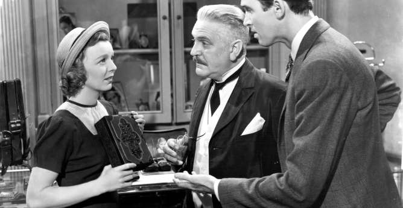

El Bazar de las Sorpresas. Obra maestra de Ernst Lubitsch
Un joven vendedor de una tienda de regalos de Budapest, Alfred Kralik (James Stewart) mantiene un romance platónico por correspondencia. Preparando su primer encuentro con ella, asume sus problemas salariales y se encuentra con una anodina compañera de trabajo (Margaret Sullavan) que resulta ser su idealizada dama.
Desde luego, para descubrir quienes somos hay que mentir. Habremos de mentir. Pero ¿no lo hacemos a diario? Las mentiras (piadosas, importantes, pequeñas o mayores) cubren nuestra existencia, incluso más allá de esa esfera social que nos invita en la cortesía. Pero ¿y decidir que la mentira es un uso retórico magnífico para encontrar la verdad?
Táctica teatral ¿verdad? William Shakespeare la conocía. En una de sus mejores comedias, La duodécima noche o lo que queráis, la usa con fines tremendamente exitosos: al tiempo que nos hace reír, nos recuerda que el amor son también las confidencias o lo que queremos que los otros vean.
Lubitsch, que tenía un temperamento heredero de los momentos más burlones del dramaturgo inglés, entregó aquí su mejor comedia, con el habitual uso de fuentes y aliados. Basada en la obra de teatro Parfumerie de Miklós Laszlo y adaptada por Samson Raphaelson y un no acreditado Ben Hecht, la película, producida y dirigida por Lubitsch, lleva también su genuino sello y su capacidad de usar, de manera brillante, “todos y cada uno de los puntos de vista individuales, siempre y cuando convenga”. Así de bien lo ha dejado ya glosado el crítico Dave Kehr.
Los giros argumentales son verdaderamente importantes. Para los personajes y los más avezados espectadores. James Stewart encarna con un registro magnífico, idealista pero dando brotes mezquinos a su personaje, a un atribulado vendedor de una tienda de regalos llamado Alfred Kralik, agobiado, principalmente, por su relación con su jefe, Hugo Matuschek (Frank Morgan). También está ilusionado pues ha conocido a una mujer culta, sorprendente, y prepara su primer encuentro: todo su romance ha sido por carta. El platonismo se engrandece en cada línea, y el primer encuentro debe ser perfecto.
Tras una pelea sobre una estúpida caja de cigarrillos que al abrirse contiene una canción rusa tradicional, Matuschek contrata a la joven Klara Novak, que la vende haciéndola pasar por una cajita de dulces. Es la interpretación de Margaret Sullavan, prácticamente la protagonista del film, la que compone toda la película. Su actitud, neurótica y oscurecida, la que nos encandila por sus fueros narrativos.
La película nos presenta aquí su punto más discutible, pero no en la ficción y su desarrollo. El jefe cree que el empleado está teniendo un romance con su esposa, Pepi (William Tracy), pero su sospecha es parcial: es con el amigo de Alfred, también trabajador, Ferencz Vadas (Joseph Schilkdraut) con el que está sucediendo tal romance
Por supuesto, una vez sucede el primer encuentro, las mentiras se expanden: en vez de revelar su identidad de amante del papel, Kralik miente, decepcionado al comprobar que es su tediosa compañera la que él había imaginado como dama elevada. Empiezan, entonces, los enredos hasta llegar a un final inesperado y conmovedor.
El acierto mayor de esta comedia está en todo su desenlace, en la medida en que todos los enredos no solamente sirven como brillante exhibición de progresión dramática y complicaciones que no dejan de darnos mayores matices sobre la Historia, sino que llevan el dilema hasta la culminación, algo que rara vez se ve en cualquier comedia romántica contemporánea.
¿Cual es el dilema de la película? Alfred decide no revelar su identidad y poner a prueba a su futurible novia en comparación con la mujer de las cartas, de la que él se piensa enamorado. Pero ¿qué le falta al hombre de la historia? Tal vez un espejo. ¿Somos las mismas personas ante nuestros amigos o nuestros compañeros, donde dejamos que lo desagradable emerja sin ser tan exigentes, que con nuestros amores?
Es un amor imposible, desde luego. La introducción es memorable, al respecto. Un hombre en una tienda de regalos, su vida es corriente y de repente: las palabras. Se empiezan a materializar sueños, caminos, su imaginación ya desbordada. Y cuando busca la verdad, necesita otras mentiras. Pero solamente al final, cuando comprende que tras las palabras no hay una actuación sino una parte, una parte que por alguna razón no estamos dispuestos a mostrar con facilidad, es cuando aprende a conocer a Klara
¿Qué solución brillante propone Lubitsch? Que la verdad surja con el uso de otras mentiras. En la última escena, así sucede. Klara dice haber conocido a su amante misterioso, lo describe como gordo, desempleado y calvo. Y también confiesa haber querido a Alfred, el mismo pero otro, cuando era “naif y boba” y entró a trabajar en la tienda. En el trasiego de esas afirmaciones, el amante dice ser ambos para poder ser único.
La sinceridad había de ser dolorosa, pero se carga de sentido. Si, claro, queríamos juzgar al otro porque había otro más lejos. Y Lubitsch, que necesita elegantes y magníficos movimientos de cámara para desvelarnos sus ideas, nos deja claro que la distancia genera un montón de dependes en el deseo. Pero que esos quizás no son siempre estratagemas, mentiras, barnices.
Se vende una caja de cigarrillos con música dentro para ser una cajita de dulces. Pero es una mentira, diremos al principio. Y luego pensaremos que quizás no, quizás puede ser lo que queramos que sea, si, efectivamente, podamos dar otro uso. En esos quizás, dibuja esta obra maestra sus matices: una venta, un espacio lejano del tiempo ansiado en cartas y del tiempo perdido en la tienda en el que se dibuja eso que no vemos sino es en papel y con otro remitente. Iba a ser cambiado todo con palabras, pero no bastaba: se necesitaban los gestos, empezar a llamar las cosas de otra manera para mirarlas también de distinto modo. El desprecio, al principio justo, por el trabajo luego es miedo: ¿y si no es ella? Pero al final es confirmación, porque el miedo es compartido ¿y si no eres tú?
Al recordar el enamoramiento, el pasado y hacerlo desde el presente, si la historia fue o terminó frustrada, lo cual no es difícil, decimos: “era yo un tonto”. Lo decimos por miedo, por comodidad. ¿Pero y si no lo fuimos? O ¿y si lo fuimos de una manera bastante opuesta a la que nos gusta pensar que lo fuimos? Estas son las disyuntivas, también las respuestas que ofrece la sabiduría de Lubitsch, quien deja la acción del film en su Europa natal, lo cual la hace una película de Hollywood todavía menos convencional.
Pese a necesitar una digna remasterización a la altura de su belleza, con loable trabajo del operador William H. Daniels y Gene Ruggiero como montador, al tiempo que una eficiente banda sonora de Werner R. Heyman, en el mejor de sus trabajos, la película se mantiene decididamente valiosa, capaz de hacernos decir más en cada revisión.
